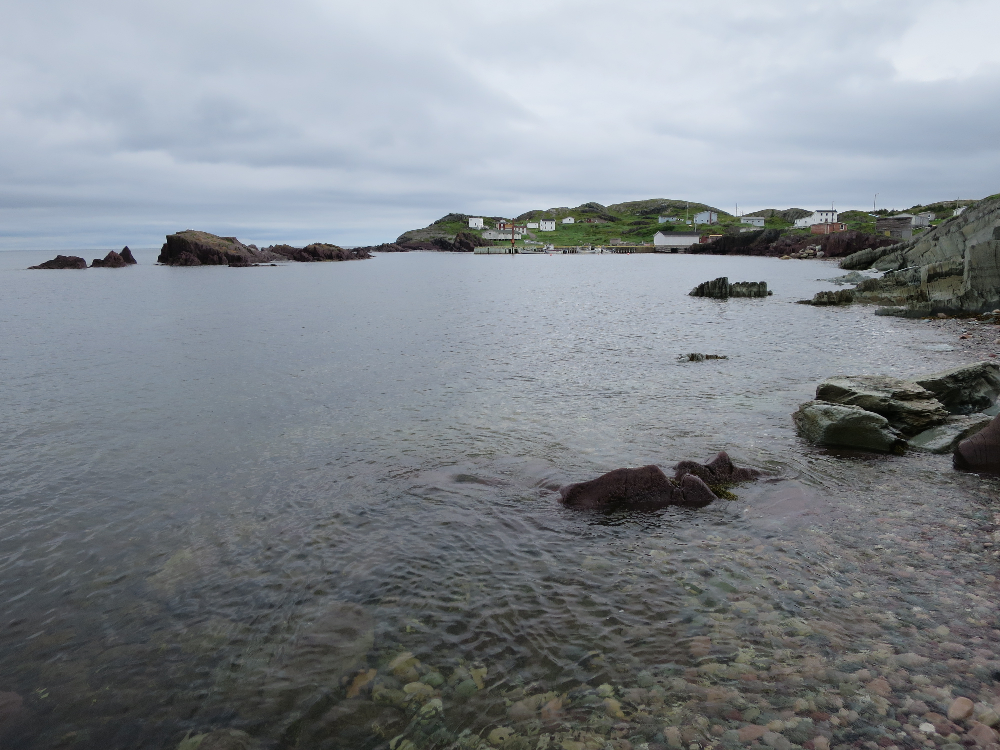
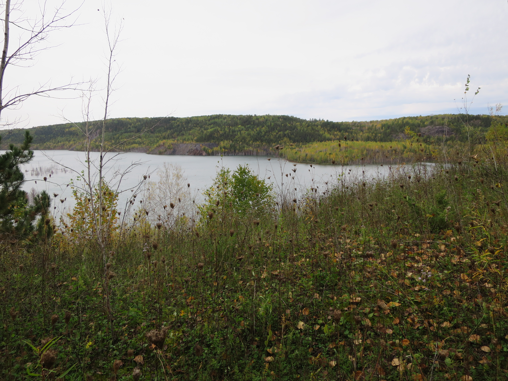

We embrace and encourage diversity in all forms and reject any form of discrimination. Fostering the diversity of thoughts, perspectives, and experiences that makes each of us unique strengthens the quality, social relevance, and impact of our research endeavors. However, the sad truth about the Earth Science disiplin is that there has been no increase in diversity in the past 40 years (Bernard and Cooperdock, 2018). This narrative is no different at UVic or within SEOS. The lack of diversity contributes directly to the lack of inclusion and equity experienced by people from marginalized groups (Dutt, 2020). In the Earth history group, we work towards increasing representation and retention by listning, educating, and setting goals for ourselves.
We acknowledge with respect the Lekwungen peoples on whose traditional territory
the university stands and the Songhees, Esquimalt and W̱SÁNEĆ peoples whose historical
relationships with the land continue to this day.
We recognizes that colonization have significantly changed Indigenous peoples’
relationship with this land and that the associated attitudes, policies and
institutions have served to exclude Indigenous students from research.
There is much to be done to adress the historical and continued barriers
facing Indigenous students, and the territorial acknowledgement is an important
part of acknowledging this history.
It is a goal of the Earth history group to work with indigenous communities to
increase representation and to increase and embrace the use of traditional
knowledge in our research.
We acknowledge that there are different ways of knowing and establishing a
long-term working relationship with Indigenous communities takes time, respect,
and includes inputs from the community.
If you are aware of research efforts that could help Indigenous communities,
either through laboratory measurements or education, please reach out to us.
An important effort to increasing participation and retention of Black, Brown,
and Indigenous people in Geoscience is to deepen our knowledge of racism in our
field, and be able to recognize the ways in which racism is expressed in our
community today.
The killings of George Floyd, Breonna Taylor, and others, has ignited a global
conversation about racism, white supremacy, and systems of oppression.
The geoscience community has responded with statements, reading groups, and
committees addressing the overall lack of diversity within our field. For example,
the Strike for Black Lives and #ShutDownSTEM day were a mass shutdown
of academia that took place around the world on June 10, 2020. The main goals
of the strike and the shut down were to reflect upon anti-Black racism in
academia and STEM and to commit to actions to eradicate it.
Within the Earth history group, we continue our anti-racist and abolitionist
training and we are inspired by the objective outlied by the
URGE initiative.
These objectives are:
(1) deepening our knowledge of the effects of racism on the participation and
retention of Black, Brown, and Indigenous people in Geoscience,
(2) drawing on existing literature, expert opinions, and personal experiences
to develop anti-racist policies and strategies, and (3) sharing, discussing,
and modifing anti-racist policies and strategies within our community.
Early geoscientists are often glorified and discussed in terms of intellectual
achievements, strong personalities, or heated debates.
However, the social and political backdrop for these scientists is often intertwined
with the history of imperialism and colonialism.
One example is John Wesley Powell, the man who explored the Colorado River,
while also conducting anthropologic research that presupposed the racial inferiority
of Native Americans
(
see articly by Tamara Pico, 2019).
It is important to acknowledge the history and role of scientific racism in
shaping our scientific community.
Recently, a new teaching resource has been develop by a group of geoscientists
(the geo-context team) to help educators by offering more inclusive context for
inequities in the field today.
In the Earth history group, we are inspired by these modules and seek to include
similar context into teaching of undergraduate and graduate course.